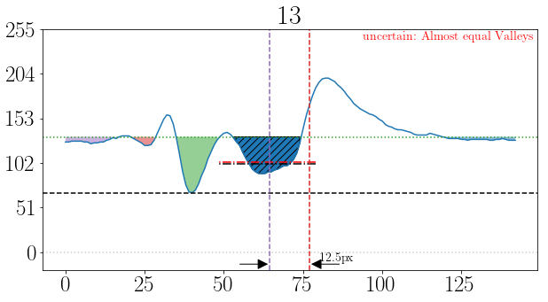

Analyze a shock signal
The line-scanning technique has been developed and widely used to determine the position of shocks, particularly for normal shocks or those close to normal. In this example, the core method of the shock tracking algorithm is based on detecting the variation in the maximum density gradient area. The methodology is detailed in this artical. From the generated slice list (discussed in detail in the Slice list generation example), the shock will be tracked, and the corresponding signal will be generated for analysis.
Steps are as following:
Import the slice list and define important parameters:
import cv2
import numpy as np
from ShockOscillationAnalysis import SOA
if __name__ == '__main__':
# define the slice list file
imgPath = r'results\2.0kHz_10mm_0.12965964343598055mm-px_tk_60px_-SliceList.png'
f = 2000 # images sampling rate
# from the file name or can be passed directly from SliceListGenerator.GenerateSlicesArray function
Scale = 0.12965964343598055 # mm/px indicates the displacement accuracy
# import the slice list
slicelist = cv2.imread(imgPath)
# iniate the ShockOscillationAnalysis module
SA = SOA(f)
# spacify the shock region (Draw 2 vertical lines)
NewRef = SA.LineDraw(slicelist, 'V', 0, Intialize = True)
NewRef = SA.LineDraw(SA.clone, 'V', 1)
NewRef.sort() # to make sure the spacified lines are correctly sorted
ShockwaveRegion = slicelist[:,NewRef[0]:NewRef[1]] # to crop the slicelist to the shock region
xPixls = (NewRef[1]-NewRef[0]) # the width of the slice list in pixels
ShockResionScale = xPixls*Scale # the width of the slice list in mm
print(f'Shock Regions: {NewRef},\t Represents: {xPixls}px, \t Shock Regions in mm:{ShockResionScale}')
Note
SA.cloneis the modified image to see the first line, to keep original without modification.
{kind=link}
Important
The tracking domain must not contain more than one shock, as this will confuse the software and generate incorrect results.
And the console output of this step is:
registered line: 429
registered line: 286
Shock Regions: [276, 428], Represents: 152px, Shock Regions in mm:19.708265802269043
To improve the traking quality, it is good to clean optical defects by subtracting Average slice from all slices:
#%% slice list cleaning
# [subtracting the average, subtracting ambiant light frequency, improve brightness/contrast/sharpness]
ShockwaveRegion = SA.CleanSnapshots(ShockwaveRegion,'Average')
The console output of this step is:
Improving image quality ...
- subtracting Averaging ... ✓
Note
Clean illumination disturbances by Fast Fourier Transform (FFT) also can be done by adding
FFTand other parameters as follow.
ShockwaveRegion = SA.CleanSnapshots(ShockwaveRegion,
'Average','FFT',
filterCenter = [(0, 25)], D = 20, n = 5,
ShowIm = True)
{kind=link}
{kind=link}
filterCenterand otherFFTparameters can be determined by eneblingShowImto detect the defect frequency location.The
filterCentermay contain multiple locations.The cleaning process follows the order of the argument, in the above example the Averaging will take place first then FFT.
Additional parameters such as
Brightness/Contrastmay also appended to the arguments if required checkSOA.CleanSnapshots.
To track the shock and generate the shock signal and scale it.
#%% Find shock location
shock_loc_px, uncer = SA.ShockTrakingAutomation(shock_region,
method = 'integral', # there is also 'maxGrad' and 'darkest_spot'
reviewInterval = [11,14], # to review the tracking process within this range
Signalfilter = 'med-Wiener')
print(f'uncertainty ratio: {(len(uncer)/len(shock_loc_px))*100:0.2f}%')
# unpack and scale the output values
shock_loc_mm= scale * np.array(shock_loc_px) # to scale the shock location output to mm
snapshot_indx, uncertain, reason = zip(*uncer) # unpack uncertainity columns
uncertain_mm = scale * np.array(uncertain) # to scale the uncertain locatshock location output to mm
# plotting the output
fig1, ax1 = plt.subplots(figsize=(8,50))
# shock region image as background to review the tracked points
ax1.imshow(shock_region, extent=[0, shock_region_mm, shock_region.shape[0], 0], aspect='0.1', cmap='gray')
ax1.plot(shock_loc_mm, range(n),'x', lw = 1, color = 'g', ms = 7) # To plot the detected shock locations
ax1.plot(uncertain_mm, snapshot_indx,'x', lw = 1, color = 'r', ms = 5) # To plot the uncertain shock points
The tracking review:
{kind=link}
{kind=link}
{kind=link}
{kind=link}
The out put results:
{kind=link}
The console output of this step is:
Processing the shock location ...
[====================] 100%
Appling med-Wiener filter...
Processing time: 0 Sec
uncertainty ratio: 14.00%
Note
Mostly, the tracked points follow the shock location; however, the uncertainty ratio is quite high at 14%.
The reasons for uncertainty can be reviewed from the uncertainty output. Based on this review, users may choose to change the strategy by adjusting the cleaning parameters or their order. Additionally, the selected range of the shock could be a parameter to consider.
Finally, shift the signal by the average value and use welch method to study the power spectral density (PSD).
#%% Apply welch method for PSD
avg_shock_loc = np.average(shock_loc_mm) # find the average shock location
shock_loc_mm = shock_loc_mm - avg_shock_loc # to shift the signal to the average
# Calculate the PSD
Freq, psd = signal.welch(x = shock_loc_mm, fs = f, window='barthann',
nperseg = 512, noverlap=0, nfft=None, detrend='constant',
return_onesided=True, scaling='density')
fig,ax = plt.subplots(figsize=(10,10))
ax.loglog(Freq, psd, lw = '2')
ax.set_ylabel(r"PSD [mm$^2$/Hz]")
ax.set_xlabel("Frequency [Hz]")
The out put results:
{kind=link}
The full code example:
import cv2
import numpy as np
from scipy import signal
import matplotlib.pyplot as plt
from ShockOscillationAnalysis import SOA
if __name__ == '__main__':
# define the slice list file
imgPath = r'results\2.0kHz_10mm_0.12965964343598055mm-px_tk_60px_-SliceList.png'
f = 2000 # images sampling rate
# from the file name or can be passed directly from SliceListGenerator.GenerateSlicesArray function
scale = 0.12965964343598055 # mm/px
# import the slice list
slicelist = cv2.imread(imgPath)
n = slicelist.shape[0] # time
# iniate the ShockOscillationAnalysis module
SA = SOA(f)
# spacify the shock region (Draw 2 vertical lines)
newref = SA.LineDraw(slicelist, 'V', 0, Intialize = True)
newref = SA.LineDraw(SA.clone, 'V', 1)
newref.sort() # to make sure the spacified lines are correctly sorted
shock_region = slicelist[:,newref[0]:newref[1]] # to crop the slicelist to the shock region
xPixls = (newref[1]-newref[0]) # the width of the slice list in pixels
shock_region_mm = xPixls*scale # the width of the slice list in mm
print(f'Shock Regions: {newref},\t Represents: {xPixls}px, \t Shock Regions in mm:{shock_region_mm}')
#%% slice list cleaning
# [subtracting the average, subtracting ambiant light frequency, improve brightness/contrast/sharpness]
shock_region = SA.CleanSnapshots(shock_region,'Average')
#%% Find shock location
shock_loc_px, uncer = SA.ShockTrakingAutomation(shock_region,
method = 'integral', # There is also 'maxGrad' and 'darkest_spot'
reviewInterval = [11,14], # to review the tracking process within this range
Signalfilter = 'med-Wiener')
print(f'uncertainty ratio: {(len(uncer)/len(shock_loc_px))*100:0.2f}%')
# unpack and scale the output values
shock_loc_mm= scale * np.array(shock_loc_px) # to scale the shock location output to mm
snapshot_indx, uncertain, reason = zip(*uncer) # unpack uncertainity columns
uncertain_mm = scale * np.array(uncertain) # to scale the uncertain locatshock location output to mm
# plotting the output
fig1, ax1 = plt.subplots(figsize=(8,50))
ax1.imshow(shock_region, extent=[0, shock_region_mm, shock_region.shape[0], 0], aspect='0.1', cmap='gray');
ax1.plot(shock_loc_mm, range(n),'x', lw = 1, color = 'g', ms = 7)
ax1.plot(uncertain_mm, snapshot_indx,'x', lw = 1, color = 'r', ms = 5)
#%% Apply welch method for PSD
avg_shock_loc = np.average(shock_loc_mm) # find the average shock location
shock_loc_mm = shock_loc_mm - avg_shock_loc # to shift the signal to the average
Freq, psd = signal.welch(x = shock_loc_mm, fs = f, window='barthann',
nperseg = 512, noverlap=0, nfft=None, detrend='constant',
return_onesided=True, scaling='density')
fig,ax = plt.subplots(figsize=(10,10))
ax.loglog(Freq, psd, lw = '2')
ax.set_ylabel(r"PSD [mm$^2$/Hz]");
ax.set_xlabel("Frequency [Hz]");